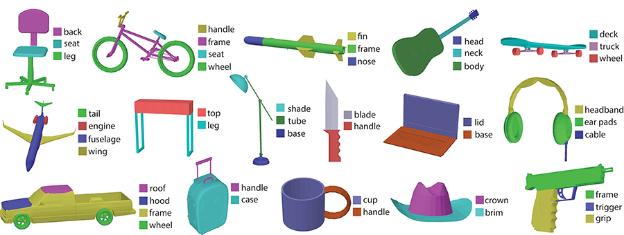
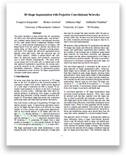

3D Shape Segmentation with Projective Convolutional Networks
People
Abstract
This paper introduces a deep architecture for segmenting 3D objects into their labeled semantic parts. Our architecture combines image-based Fully Convolutional Networks (FCNs) and surface-based Conditional Random Fields (CRFs) to yield coherent segmentations of 3D shapes. The image-based FCNs are used for efficient view-based reasoning about 3D object parts. Through a special projection layer, FCN outputs are effectively aggregated across multiple views and scales, then are projected onto the 3D object surfaces. Finally, a surface-based CRF combines the projected outputs with geometric consistency cues to yield coherent segmentations. The whole architecture (multi-view FCNs and CRF) is trained end-to-end. Our approach significantly outperforms the existing stateof- the-art methods in the currently largest segmentation benchmark (ShapeNet). Finally, we demonstrate promising segmentation results on noisy 3D shapes acquired from consumer-grade depth cameras.

Paper
ShapePFCN.pdf, 6.5MBCitation
Evangelos Kalogerakis, Melinos Averkiou, Subhransu Maji, Siddhartha Chaudhuri, "3D Shape Segmentation with Projective Convolutional Networks", Proceedings of the IEEE Computer Vision and Pattern Recognition (CVPR) 2017 (oral presentation)
Bibtex
Presentation at CVPR
Slides in PDF format, 9MB
YouTube video of the talk:
Poster
ShapePFCN_poster.pdf, 3MBLabeled mesh dataset from ShapeNetCore
labeled_meshes.7z (688MB): this archive contains the “ground-truth” labelings of the meshes we used for our experiments on ShapeNetCore, L-PSB (labeled version of PSB), and COSEG. The meshes are stored in OFF format. The ShapeNetCore labelings originate from the “expert-verified” segmentations in Yi et al.'s dataset. The original ShapeNetCore labelings were provided in a point cloud format (~3K points sampled per mesh). We transferred the point labels to mesh polygon labels via a nearest neighbors approach combined with graph cuts. For the L-PSB and COSEG, we used the provided labeled meshes as-is. The mesh labelings are stored in a simple text format: for each label, we store a label id in one line, and the next line contains indices to faces under that label. Face indices are integers starting from 1. The order of faces follows the OFF files. We note that for evaluating the competing methods on ShapeNetCore, we transferred their inferred face labels back to point cloud labels through nearest neighbors, and computed the labeling accuracy according to the original point cloud labelings. For evaluation on L-PSB and COSEG, we measure the labeling accuracy on mesh faces (weighted by face area).
Training/Test Split
For the L-PSB, COSEG, and the above ShapeNetCore dataset, we report the mesh ids we used for training and testing here: splits.txt.
Results
labelings.7z, 9.3MB: this archive contains segmentation and labeling results from our method and ShapeBoost on the test shapes of the above L-PSB, COSEG and ShapeNetCore datasets. The results are stored in our labeling text format explained above (for each label, we store a label id in one line, and the next line contains indices to faces under that label). We also provide visualizations of the mesh labelings for our method and ShapeBoost: ShapePFCNimages.7z (50MB). If you want to compare your method with these results, please consider using the same training and test splits for fair comparisons. We also note that we do not assume upright or consistent shape orientation in our experiments.
Source Code
Latest version on github: https://github.com/kalo-ai/ShapePFCN
Acknowledgements
Kalogerakis acknowledges support from NSF (CHS-1422441, CHS-1617333), NVidia and Adobe. Maji acknowledges support from NSF (IIS-1617917) and Facebook. Chaudhuri acknowledges support from Adobe and Qualcomm. Our experiments were performed in the UMass GPU cluster obtained under a grant from the Collaborative R&D Fund managed by the Massachusetts Technology Collaborative.